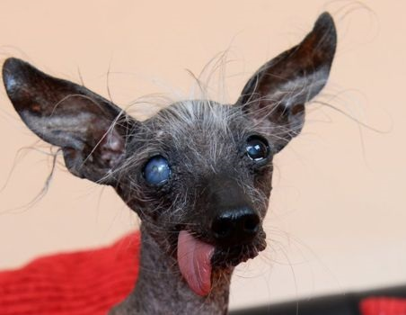

|  | ||
| Tu nombre: Eloy Rojano Vargas | Nombre de tu perro: Ojitos | |
| Dirección: Calle del perro 5A | ||
| Email: rojano.vargas@gmail.com | Contraseña: ************ | |
| Tipo de perro: patada | ||
| Mi perro es especialmente feo porque... | ||
Como empiece no paro, pero mi pareja se encaprichó con el bicho más feo de la perrera. "¿Si no le adoptamos nosotros, quién lo hará?" Y ahí está, feliz como el solo y feo como nadie. Vive mejor que yo, eso sí. Y se tira unos pedos después, el muy mamón... |